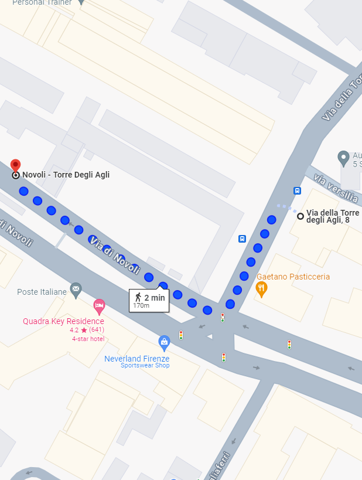
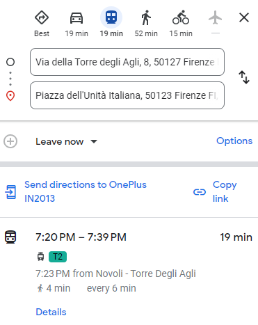
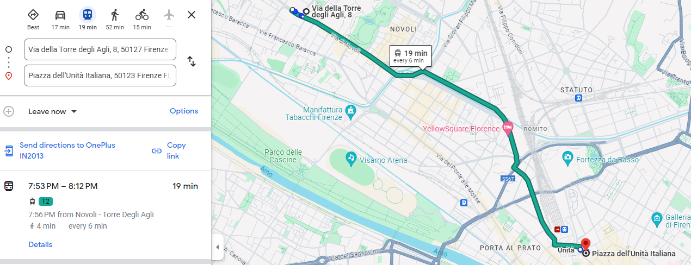

Trasporti pubblici
Di seguito puoi trovare le informazioni su come raggiungere il centro storico e altre parti della città.
Fermata del tram più vicina
- La fermata del tram più vicina è Novoli - Torre degli Agli. È a solo 2 minuti a piedi da Via della Torre degli Agli, 8. Quando scendi dal tram, cammina lungo Via di Novoli, quindi gira su Via della Torre degli Agli per raggiungere l'appartamento.


Per il centro storico
- Da Via della Torre degli Agli, 8, cammina fino alla fermata del tram e prendi il Tram T2 da Novoli - Torre Degli Agli fino a Unità, che si trova vicino alla stazione ferroviaria di Santa Maria Novella. Il viaggio in tram dura circa 19 minuti, con tram che passano ogni 6 minuti.



Per XXX
- ####

Per XXX
- ###
Note
- L'appartamento offre una base strategica per esplorare la città.
- È a 2 minuti a piedi dalla fermata del tram Novoli - Torre degli Agli, che si trova sulla linea del Tram T2 che collega l'aeroporto al centro città e alla stazione ferroviaria di Santa Maria Novella.
- 10 minuti per l'aeroporto.
- 19 minuti per la stazione ferroviaria di Santa Maria Novella.
- 19 minuti per il centro città.